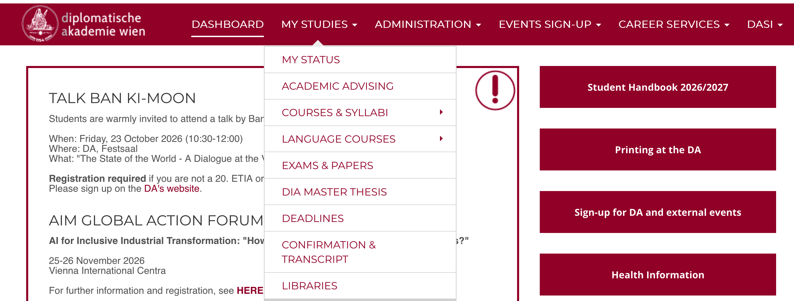
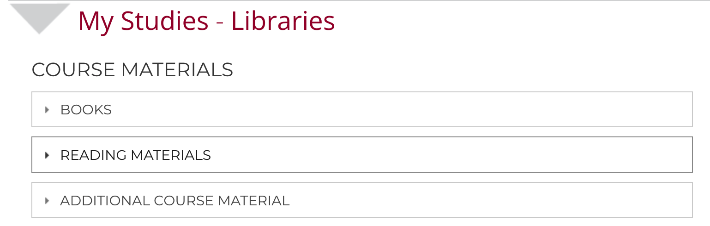
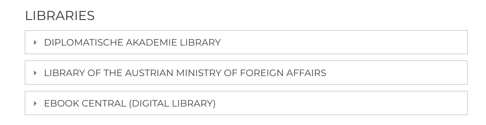

Using the Library’s Electronic Resources
A step-by-step guide for DA students
Accessing the Libraries page
Follow these steps to access the Libraries page through your DA account.
Step 1: Sign in to your DA account
Go to the DA Service Portal and sign in with your DA account.
Once you have signed in, follow the steps below.
Step 2: Open My Studies
In the navigation bar at the top of the page, click My Studies to open the drop-down menu.
The menu displays several options.
Step 3: Select Libraries
Look at the bottom of the drop-down menu and select Libraries.

Step 2: Course & Reading Materials
Once you are in the Libraries section, here is a quick guide to finding your textbooks, syllabus readings, and lecture slides!
1. Books
- Where to find them: Hard copies of essential books are available at both the DA Library and the MFA Library.
- Details: See the “DA Libraries” section below for details on opening hours and borrowing!
2. Reading materials
- Reading Priorities: Your course convenor will clearly label readings in the syllabus as fundamental, mandatory, or optional so you know what to read first.
- Digital Copies: You can access all digital readers on the DA Intranet (next to the syllabus) and on your course’s Moodle page.
- Printing: Feel like reading on paper? You can easily print out course readers using the DA campus printers or print them at home.
3. Additional course materials
- Moodle Hub: PPT slides, info sheets, and any extra resources shared by your professors are always uploaded directly to your course Moodle page.

Step 3: DA Libraries & Electronic Resources
Once you navigate to the Libraries page, you can access both physical collections and digital libraries. Here is a student-friendly guide to using the DA Student Library, the MFA Library, and Ebook Central.
1. Diplomatische Akademie Library (DA Student Library)
The DA Student Library features an open-stack collection containing core course textbooks alongside key works in Economics, History, International Relations, Law, Environmental Studies, Digital, and Cultural Studies.
Location: Reading Room, 1st Floor (next to the Finance Department).
Opening Hours: Monday–Friday, 1:00 PM – 5:00 PM. > Need a book urgently outside opening hours? Stop by the Academic Administration Office on the 1st floor during standard work hours or email bibliothek@da-vienna.ac.at.
How Borrowing Works:
- Limit: You can borrow up to 6 books at a time (you can borrow more once previous books are returned).
- Searching: Search the available collection directly via the online catalog: SEARCH HERE.
- Returns: Return books directly to the DA Library during open hours or to the Academic Administration Office.
- Shelf Care: Always return books to their proper place!
(Example DA call number format:LAW-Maxm-1.1-01Ex)
2. Library of the Ministry for Foreign Affairs (MFA Library)
The MFA Library offers specialized literature on European/foreign policy, diplomacy, international law, human rights, and global economy, as well as language dictionaries and past DA Master’s theses.
- Staff & Seminar Room Location:
- Librarian Offices: 1st Floor along the long corridor (next to the lounge area).
- Current Books & Textbooks: Housed in open-stack collections inside the new seminar rooms along the long corridor.
- Office Hours:
- Monday – Thursday: 9:00 AM – 4:00 PM
- Friday: 9:00 AM – 2:30 PM
(Note: Opening hours may vary on public holidays and school breaks.)
- How to Borrow Books:
- Search the Catalog: Browse topics via the MFA Library’s online catalog.
- In-Person Requests: For books shelved in the seminar rooms opposite the Librarian’s Office, submit your loan request in person. Removing books without prior approval is strictly prohibited.
- Email Orders: Click “Available in the Foreign Policy Library of the BMEIA” in the catalog to email your order (aussenpolitische.bibliothek@bmeia.gv.at), quoting the call number, title, author, and year. You will receive an email confirmation when your books are ready.
- Pick-up & Returns: Use the collection and return boxes located in the library corridor in front of the study room entrance.
- Borrowing Terms:
- Limits: Up to 6 books for a 3-week loan period (extensions are possible).
- Returns: Always hand returned books to a staff member or place them in the return box to avoid misplacement.
(Example MFA call number format:58.243C)
3. Ebook Central
Ebook Central is your digital library portal, providing full-text access to scholarly ebooks, handbooks, and research manuals across a broad range of subjects.
- What is it good for?
- Remote Access: Read full-text ebooks and individual chapters from any internet connection.
- Research Tools: Easily highlight text, take personal notes, export precise bibliographical citations, and share research with peers.
- How to Use Ebook Central:
- Access Account: To access your Ebook Central account, please click here.
- Browser Tip: The link opens in a new tab. If you see an error after consenting to cookies, simply return to the portal page and click the link a second time.
- Get Started: Check out the “How-to Videos” and “FAQs” on the Ebook Central homepage to make the most of its features!
- Feedback & Questions:
Suggestions or questions about Ebook Central are always welcome! Reach out to the DA Student Library at bibliothek@da-vienna.ac.at.
